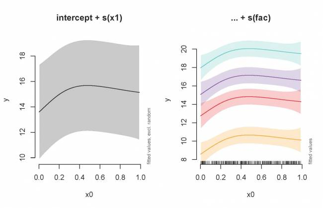
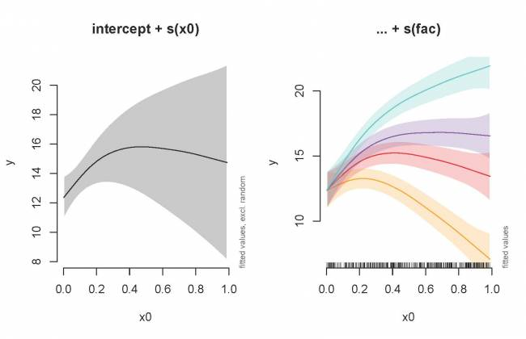
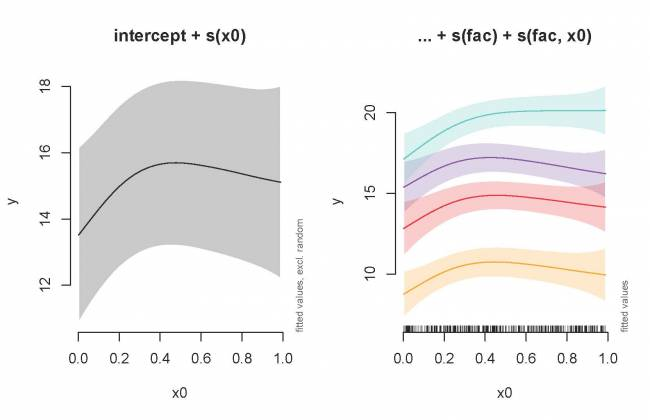

Chapitre 10 Intro rapide aux modèles additifs généralisés à effets mixtes (GAMMs)
10.1 La non-indépendance des données
Lorsque les observations ne sont pas indépendantes, les GAMs peuvent être utilisés soit pour incorporer:
- une structure de corrélation pour modéliser les résidus autocorrélés (autorégressif (AR), moyenne mobile (MA), ou une combinaison des deux (ARMA))
- des effets aléatoires qui modélisent l’indépendance entre les observations d’un même site.
En plus de changer la fonction de base, nous pouvons aussi complexifier
le modèle en intégrant une structure d’auto-corrélation (ou même des
effets mixtes) en utilisant les fonctions gamm() dans la librairie mgcv. Bien que nous ne l’utilisions pas ici, la librairie gamm4 peut également être utilisé pour estimer des modèles GAMMs dans R.
Pour commencer, nous allons jeter un coup d’œil au premier cas ; un modèle avec autocorrélation temporelle dans les résidus. Ré-examinons le modèle de la température de Nottingham; nous allons vérifier si les résidus sont corrélés en faisant appel à la fonction (partielle) d’autocorrélation.
par(mfrow = c(1, 2))
acf(resid(year_gam), lag.max = 36, main = "ACF")
pacf(resid(year_gam), lag.max = 36, main = "pACF")
Les graphiques des fonctions d’autocorrélation suggèrent qu’un modèle
AR de faible ordre est nécessaire (avec un ou deux intervalles de temps
décalés), donc nous pouvons évaluer deux modèles; ajouter un AR(1) ou un
AR(2) au modèle de la température de Nottingham et évaluer le meilleur
avec une ANOVA.
year_gam <- gamm(nottem ~ s(nottem_year) + s(nottem_month, bs = "cc"))
year_gam_AR1 <- gamm(nottem ~ s(nottem_year) + s(nottem_month,
bs = "cc"), correlation = corARMA(form = ~1 | nottem_year,
p = 1))
year_gam_AR2 <- gamm(nottem ~ s(nottem_year) + s(nottem_month,
bs = "cc"), correlation = corARMA(form = ~1 | nottem_year,
p = 2))
anova(year_gam$lme, year_gam_AR1$lme, year_gam_AR2$lme) Model df AIC BIC logLik Test L.Ratio p-value
year_gam$lme 1 5 1109.908 1127.311 -549.9538
year_gam_AR1$lme 2 6 1101.218 1122.102 -544.6092 1 vs 2 10.689206 0.0011
year_gam_AR2$lme 3 7 1101.598 1125.962 -543.7988 2 vs 3 1.620821 0.2030Le modèle avec la structure AR(1) prévoit une augmentation significative
comparativement au premier modèle (LRT = 10,69, p = 0,0011), mais il y a
très peu d’intérêt à considérer le modèle AR(2) (LRT = 1,62, p =
0,203).
10.2 Modélisation avec effets mixtes
Comme nous l’avons vu dans la section précédente, bs spécifie la
fonction de base sous-jacente. Pour les facteurs aléatoires (origine et
pente linéaire), nous utilisons bs = "re" et pour les pentes
aléatoires non linéaires, nous utilisons bs = "fs".
Trois types d’effets aléatoires différents sont possibles lors de
l’utilisation des GAMMs (où fac représente une variable qualitative
utilisée pou l’effet aléatoire et x0 est un effet quantitatif fixe) :
- interceptes aléatoires ajustent la hauteur des termes du modèle
avec une valeur constante de pente :
s(fac, bs=\"re\") - pentes aléatoires ajustent la pente d’une variable explicative
numérique:
s(fac, x0, bs=\"re\") - surfaces lisses aléatoires ajustent la tendance d’une prédiction
numérique de façon non linéaire:
s(x0, fac, bs=\"fs\", m=1)où l’argumentm=1met une plus grande pénalité au lissage qui s’éloigne de 0, ce qui entraîne un retrait vers la moyenne.
Nous examinerons d’abord un GAMM avec un interception aléatoire. Tel
que vu précédemment, nous allons utiliser gamSim() pour générer un
ensemble de données, cette fois-ci avec une composante d’effet
aléatoire. Ensuite, nous construirons un modèle avec un intercepte
aléatoire en utilisant fac comme facteur aléatoire.
# Générez des données
gam_data2 <- gamSim(eg = 6)
head(gam_data2)
# Faites rouler un modèle avec intercepte aléatoire
gamm_intercept <- gam(y ~ s(x0) + s(fac, bs = "re"), data = gam_data2)
summary(gamm_intercept)Notez le terme aléatoire dans le tableau. Vous pouvez le visualiser:
plot(gamm_intercept, select = 2)
# select=2 parce que le terme aléatoire se trouve sur la 2e
# ligne du tableau sommaire.Une fonction de traçage vraiment intéressante que nous allons maintenant
utiliser est le plot_smooth de la librairie itsadug. Contrairement
au graphique par défaut plot.gam, cette fonction présente l’effet
additionné du GAMM avec l’option de ne pas inclure les courbes
aléatoires dans le graphique. Ici, nous allons premièrement tracer
l’effet combiné de x0 (sans les niveaux de l’effet aléatoire) et
ensuite une courbe pour les quatre niveaux de fac:
par(mfrow = c(1, 2), cex = 1.1)
plot_smooth(gamm_intercept, view = "x0", rm.ranef = TRUE, main = "intercept + s(x1)",
rug = FALSE)
plot_smooth(gamm_intercept, view = "x0", cond = list(fac = "1"),
main = "... + s(fac)", col = "orange", ylim = c(8, 21), rug = FALSE)
plot_smooth(gamm_intercept, view = "x0", cond = list(fac = "2"),
add = TRUE, col = "red")
plot_smooth(gamm_intercept, view = "x0", cond = list(fac = "3"),
add = TRUE, col = "purple")
plot_smooth(gamm_intercept, view = "x0", cond = list(fac = "4"),
add = TRUE, col = "turquoise")
Ensuite, nous allons générer et tracer un modèle avec une pente aléatoire :
gamm_slope <- gam(y ~ s(x0) + s(x0, fac, bs = "re"), data = gam_data2)
summary(gamm_slope)
plot_smooth(gamm_slope, view = "x0", rm.ranef = TRUE, main = "intercept + s(x0)",
rug = FALSE)
plot_smooth(gamm_slope, view = "x0", cond = list(fac = "1"),
main = "... + s(fac)", col = "orange", ylim = c(7, 22), rug = FALSE)
plot_smooth(gamm_slope, view = "x0", cond = list(fac = "2"),
add = TRUE, col = "red")
plot_smooth(gamm_slope, view = "x0", cond = list(fac = "3"),
add = TRUE, col = "purple")
plot_smooth(gamm_slope, view = "x0", cond = list(fac = "4"),
add = TRUE, col = "turquoise")
Nous allons maintenant inclure à la fois un intercepte et une pente aléatoires.
gamm_int_slope <- gam(y ~ s(x0) + s(fac, bs = "re") + s(fac,
x0, bs = "re"), data = gam_data2)
summary(gamm_int_slope)
plot_smooth(gamm_int_slope, view = "x0", rm.ranef = TRUE, main = "intercept + s(x0)",
rug = FALSE)
plot_smooth(gamm_int_slope, view = "x0", cond = list(fac = "1"),
main = "... + s(fac) + s(fac, x0)", col = "orange", ylim = c(7,
22), rug = FALSE)
plot_smooth(gamm_int_slope, view = "x0", cond = list(fac = "2"),
add = TRUE, col = "red", xpd = TRUE)
plot_smooth(gamm_int_slope, view = "x0", cond = list(fac = "3"),
add = TRUE, col = "purple", xpd = TRUE)
plot_smooth(gamm_int_slope, view = "x0", cond = list(fac = "4"),
add = TRUE, col = "turquoise", xpd = TRUE)
Notez que les pentes aléatoires sont statique :
plot(gamm_int_slope, select = 3)
# select=3 parce que la pente aléatoire se trouve sur la 3e
# ligne du tableau sommaire.Enfin, nous allons examiner un modèle avec une surface lisse aléatoire.
Ici, si les pentes aléatoires variaient selon x0, nous auront vue des
courbe variable pour chaque niveau :
plot(gamm_smooth, select = 1)
# select=1 parce que le terme se trouve sur la 1e ligne du
# tableau sommaire.Finalement, tous ces modèles mixes peuvent être compare en utilisant la
fonction anova() pour trouver le meilleur modèle.